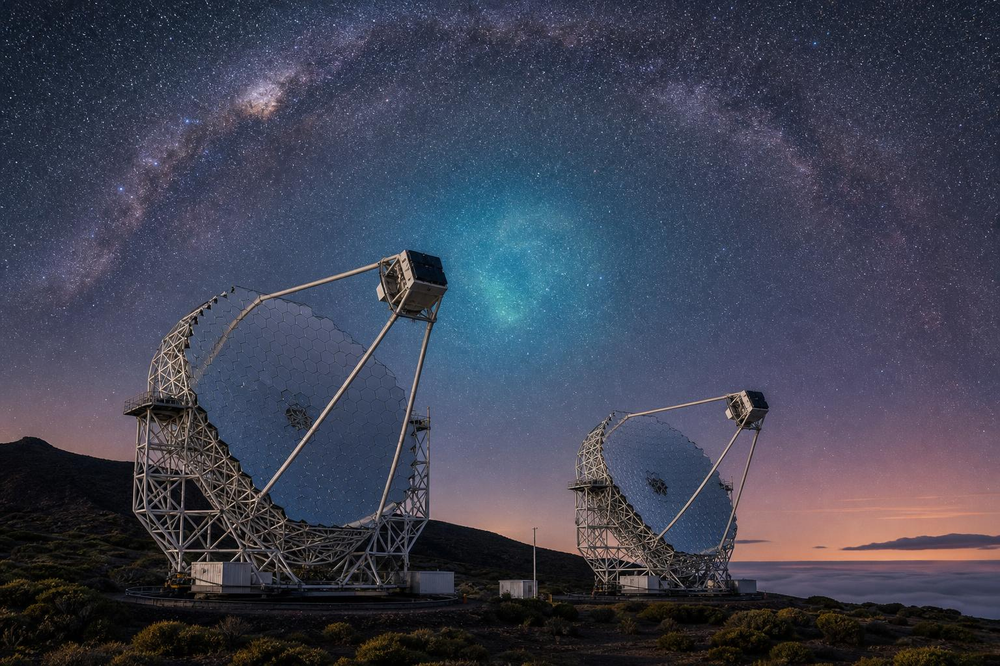

M.Sc. · Astroparticle Physics
I'm a physicist whose recent work — within the MAGIC Collaboration — focused on Bayesian modelling of dark matter density profiles, J-factor computations and statistical analyses for indirect detection with Imaging Atmospheric Cherenkov Telescopes.
Abstract
The nature of dark matter remains one of the most pressing questions in fundamental physics. If the dark sector couples to the Standard Model, self-annihilation in dense astrophysical regions should produce a flux of very-high-energy γ-rays observable from the ground.
My work develops a hierarchical Bayesian framework for the mass distribution of dwarf spheroidal galaxies, propagating the resulting uncertainties into the J-factor and, ultimately, into limits on the velocity-averaged annihilation cross-section ⟨σv⟩ derived from MAGIC observations.
Currently seeking a PhD position in dark matter phenomenology, γ-ray astrophysics, cosmology, astrophysics, particle physics, CMB, AGNs, galaxy formation and evolution, black holes, gravitational lensing, large-scale structure, quasars or extragalactic surveys — starting Autumn 2026.
Fields of interest
I'm always glad to hear from research groups, prospective advisors and collaborators working on dark matter, γ-ray astrophysics, cosmology, astrophysics, particle physics, CMB, AGNs, galaxy formation and evolution, black holes, gravitational lensing, large-scale structure, quasars, extragalactic surveys or Bayesian statistics in physics.
The fastest way to reach me is by email.
§ Projects
Thesis work, course projects and research internships across astroparticle physics, cosmology, exoplanet science and quantum mechanics. Each title opens the full report — with figures — and a PDF download.
§ Education
M.Sc. and B.Sc. in Physics, focused on astroparticle physics, cosmology and general relativity.
§ Conferences
International conferences and collaboration meetings — contributed talks and attended events on dark matter, γ-ray astrophysics and particle physics.